Press kit · Android
Peasant to King
Start with a field, build a medieval economy, and rise from serf to King.
Game facts, screenshots and artwork for journalists, reviewers and creators.
ZIP · 25.1 MB · Descriptions and original images. Trailer available separately.
About the game
A growing medieval economy
Peasant to King begins with the work of a single farmer: ploughing, sowing, watering and harvesting. Sell grain at changing market prices, improve your tools and hire workers to take over the daily labour.
Each promotion opens another part of the world. Develop an estate, reclaim regions, trade overseas and lead expeditions. Town defense and hands-on challenges eventually give way to a settlement of your own, before Ambervale's farms, workshops and stables carry the journey toward King.
Your progress builds on what came before. Earlier systems keep producing through promotions, with no prestige reset. Warm painted scenery and crisp pixel-art objects give this growing economy the feel of a lived-in medieval world.
Features
- From manual work to automation: begin by tending fields yourself, then hire workers and grow production.
- An economy that grows with you: connect farming, crafting, changing market prices and overseas trade.
- A widening adventure: reclaim four Realm regions, lead expeditions, defend a town and build a settlement on the road to King.
- Progress that lasts: promotions add new opportunities while earlier systems continue producing, without a prestige reset.
- A warm medieval world: softly painted scenery and crisp pixel-art buildings, tools and resources in a portrait interface.
Pricing and connectivity
Free to download, with optional rewarded ads and in-app purchases. There are no forced interstitial ads. The Supporter Pack is a one-time permanent purchase that removes ads and makes eligible reward boosts free. Consumable Labour Writ packs provide resource rewards. Google Play displays local purchase prices.
The campaign can be played offline. Ordinary offline production accumulates for up to six hours, subject to storage limits. Ads, purchases and optional Google Play Games cloud synchronization require online services.
Short description
Peasant to King is a medieval incremental adventure for Android. Work your first fields, hire workers and trade your way into a growing kingdom. Farming expands into crafting, overseas commerce, expeditions and settlement building, with earlier production continuing as you rise from serf to King.
Download all copy (.txt)Video
Watch the trailer
Video for your coverage
Preview the supplied trailer here or download the original MP4 for your article or video.
Gameplay screenshots
From first fields to Ambervale
Ten screenshots in progression order. Select an image to enlarge it, or download the original 540 × 960 PNG.

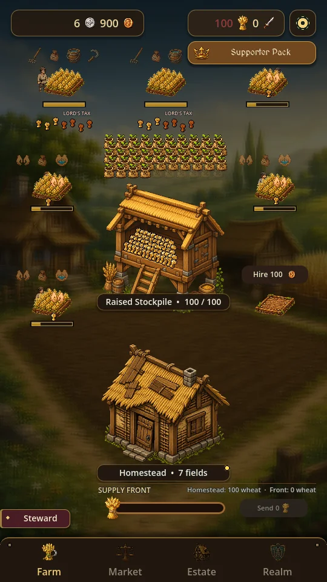
Farm
Tend your fields, hire workers and grow the Farm.
Download PNG
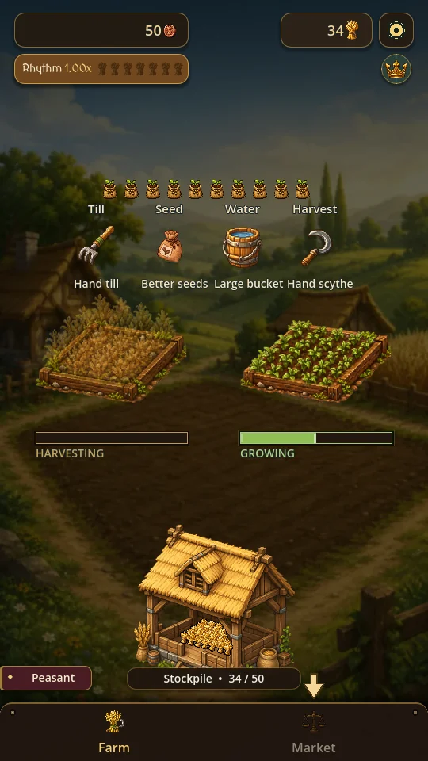
Farm upgrades
Grow a second field and improve your tools and grain storage.
Download PNG
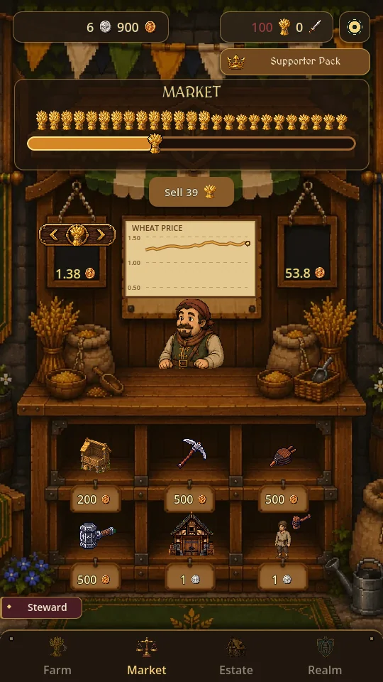
Market
Sell grain at changing market prices and invest in upgrades.
Download PNG
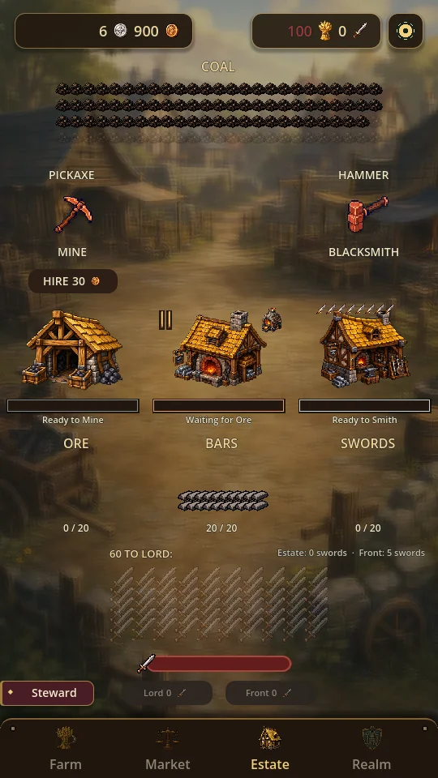
Estate
Mine ore, smelt bars and forge weapons at the Estate.
Download PNG
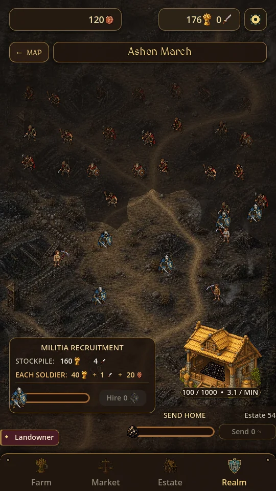
Realm combat
Militia fight bandits as you reclaim Ashen March.
Download PNG
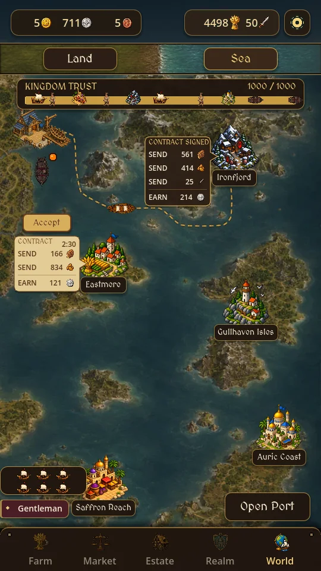
Sea trade
Trade with distant kingdoms through your Port and fleet.
Download PNG
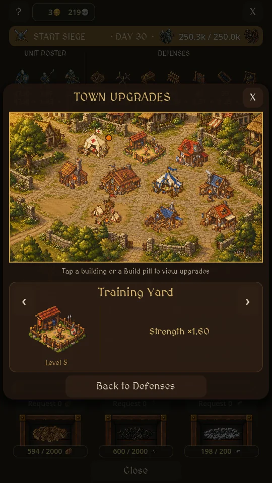
Western Town
Improve Western Town's buildings to strengthen its defenses.
Download PNG
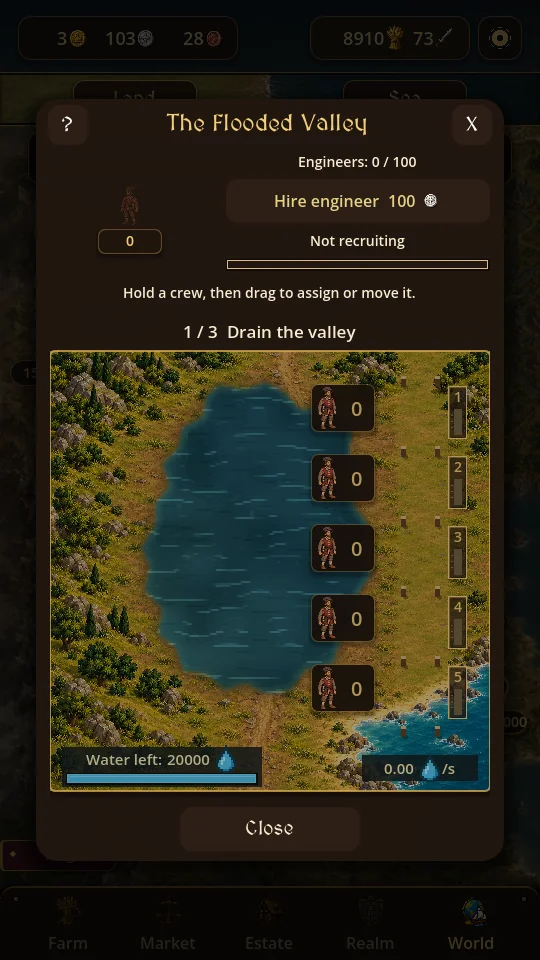
The Flooded Valley
Recruit engineers and restore a flooded valley along the Knight's journey.
Download PNG
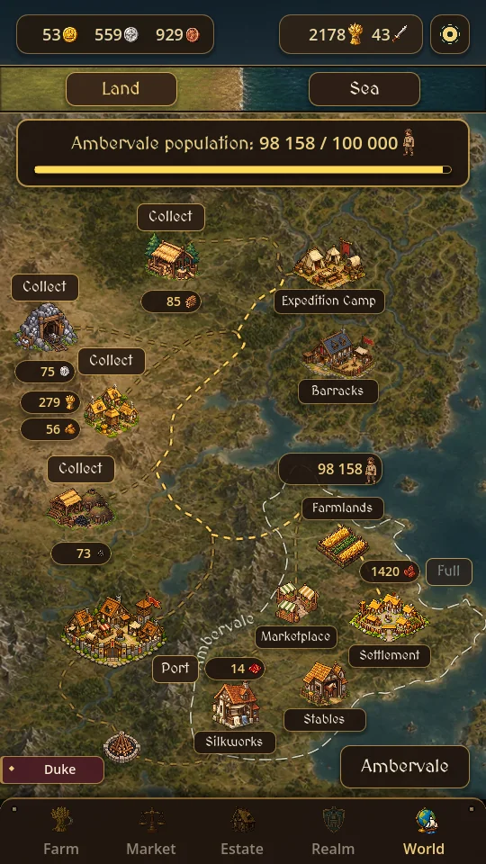
Ambervale
Develop Ambervale as your journey approaches King.
Download PNG
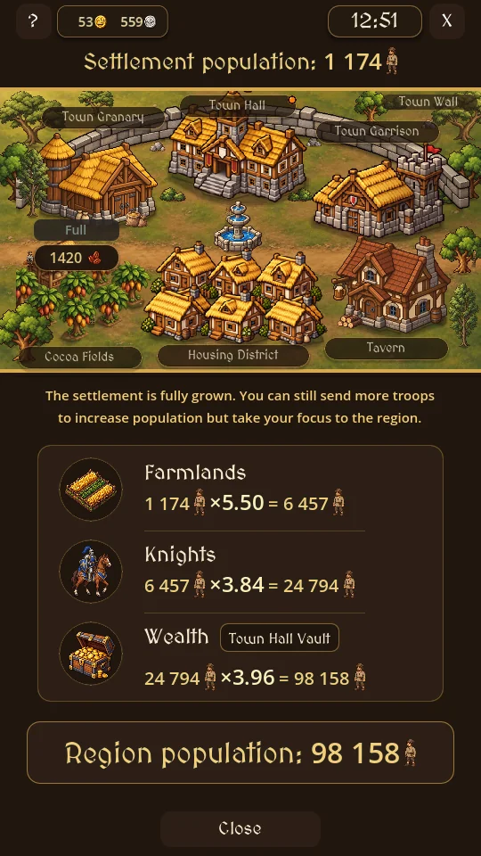
Settlement
A developed Settlement supports Ambervale's growing population.
Download PNGThis selection combines archived gameplay captures and desktop gameplay renders showing different progression stages.
Brand & promotional media
Logos and artwork
Download the game icon, transparent title logo and feature graphic in their original PNG format.
Game icon
512 × 512 · PNG
Download PNG
Transparent title logo
1536 × 1024 · PNG
Download PNG
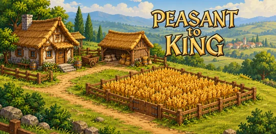
Feature graphic
1024 × 500 · PNG
Download PNG
Promotional illustrations
Six landscape illustrations for coverage of the game. These are promotional artwork, separate from gameplay screenshots.
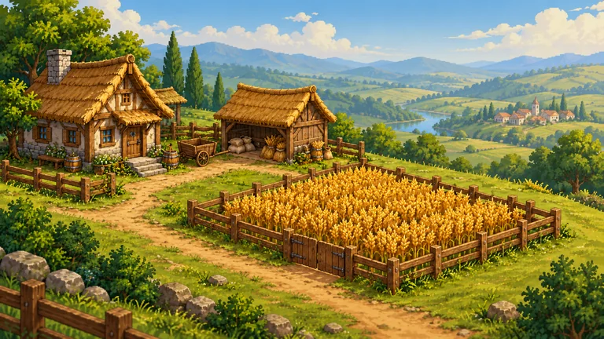
Hillside farm
1672 × 941 · PNG
Download PNG
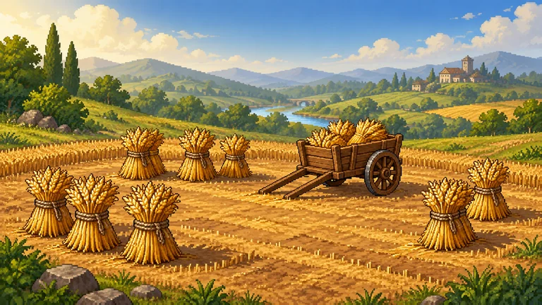
Open-ground harvest
1672 × 941 · PNG
Download PNG
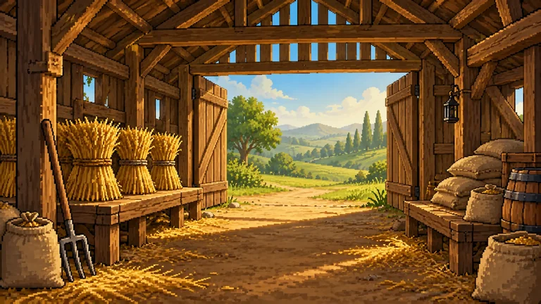
Barn interior
1672 × 941 · PNG
Download PNG
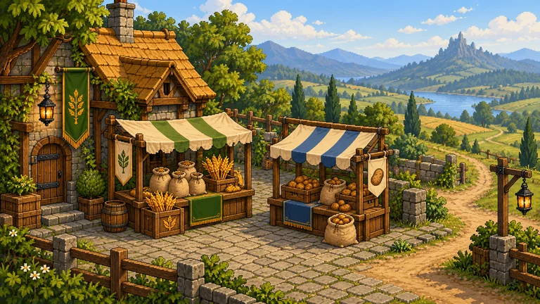
Market square
1672 × 941 · PNG
Download PNG
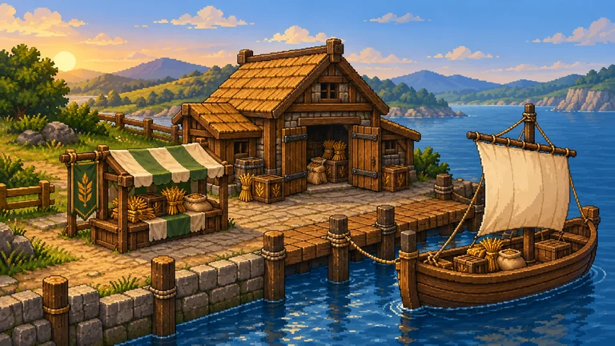
Dockside trade
1672 × 941 · PNG
Download PNG
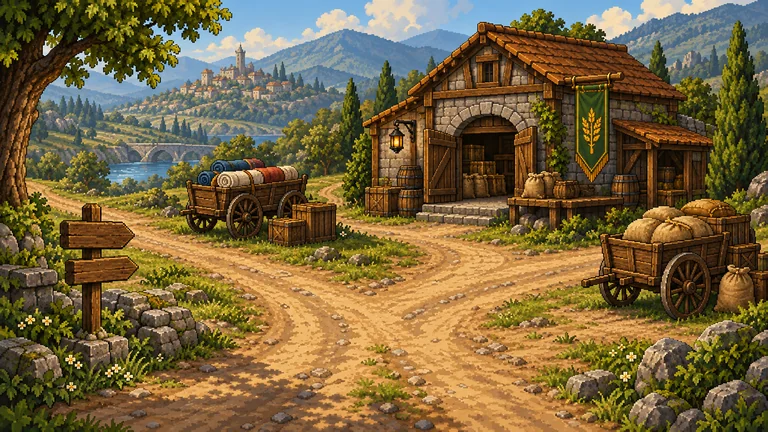
Freight-road junction
1672 × 941 · PNG
Download PNG
Developer & contact
About Agatio Games
Agatio Games is a solo game developer based in Poland, making mobile games about building, managing and progressing at your own pace. Find Peasant to King and the studio's other games at agatiogames.pl.
For coverage, interviews and questions about the game: development@agatiogames.pl.
Media use and credit
The images and trailer supplied in this press kit may be used in articles, reviews, videos and streams covering Peasant to King. Please credit Agatio Games. For other uses, contact development@agatiogames.pl.
Download press kit · 25.1 MBLast updated .